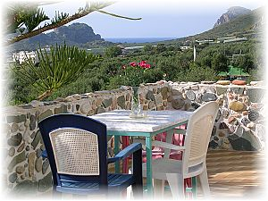
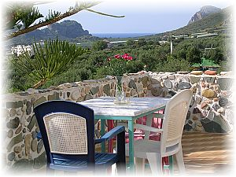
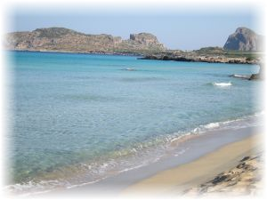
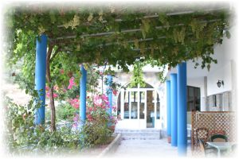

Falassarna, Platanos, Kissamos, Crete Greece
- Anastasia - Stathis Apartments is situated at Falasarna, on the West coast of Crete, about 45 minutes west of Chania.
- Falasarna is known for it's ancient sites and the beautiful sandy beaches.
- You may take the bus that passes from here three times per day to go to Kissamos and Chania.
- Anastasia - Stathis Apartments is open from April to October.
-
- Anastasia - Stathis Apartments provides roof ventilation for cooling and air condition, refrigetator, multicooker, coffeepot, bolier.
- You also have a beautiful sea and mountain view.
- We provide daily cleaning to our accommodation.
- Anastasia - Stathis Apartments has a beautiful garden, to sit and enjoy your vacations, and where the children can play safely, car park, reception and a cafe/breakfast room.
- We offer to our customers the chance to taste local wine, raki (tsikoudia) and fresh fruits.
- Restaurants are located about 70 meters away.
- Super-market is in Falassarna and Banks or Atm in Platanos or Kissamos, Platanos is located at about 5Km away from Anastasia - Stathis Apartments. The seaside is just 300 meters away.
Directions from Heraklio or Chania airport to our hotel
We are located about 12km from the town of Kissamos so you follow the signs to Chania and Kissamos and at last Platanos and Falassarna which is the port and beach of Platanos.
Use only the National Road, don't turn to Chania city, distance from Heraklio airport to Chania is about 150km, distance from Chania airport to Kissamos is about 40km.



